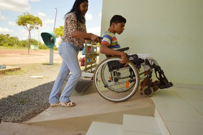

A acessibilidade é uma ponte que conecta pessoas com diferentes habilidades a uma sociedade inclusiva. Ela vai além de adaptações físicas e envolve uma mudança de mentalidade, onde todos têm oportunidades iguais para participar plenamente da vida cotidiana. Apesar dos avanços, ainda existem barreiras invisíveis que precisam ser superadas para que o mundo seja verdadeiramente acessível.
Por Que Acessibilidade é Essencial?
A acessibilidade é essencial porque torna possível que todas as pessoas, independentemente de limitações, desfrutem de direitos fundamentais como mobilidade, educação, lazer e trabalho. Ela promove:
-
Igualdade
Ao eliminar barreiras, criamos oportunidades iguais para todos.
-
Autonomia
Pessoas com deficiência podem viver de forma mais independente.
-
Inclusão
Uma sociedade acessível acolhe a diversidade, valorizando cada indivíduo.
Acessibilidade na Arquitetura e no Design Urbano
-
Rampas e elevadores
Garantem que pessoas com mobilidade reduzida possam acessar edifícios e espaços públicos.
-
Calçadas niveladas
Permitem a mobilidade segura de cadeirantes, idosos e pessoas com carrinhos de bebê.
-
Sinalização tátil e sonora
Facilita a orientação de pessoas com deficiência visual.
Acessibilidade no Transporte
-
Transporte público adaptado
Ônibus e metrôs com rampas, elevadores e avisos sonoros e visuais.
-
Veículos compartilhados acessíveis
Táxis e aplicativos de transporte com opções adaptadas para cadeirantes.
-
Infraestrutura conectada
Estações de transporte interligadas a calçadas acessíveis e travessias seguras.
Acessibilidade Digital
-
Websites acessíveis
Devem ser compatíveis com leitores de tela e oferecer navegação intuitiva para todos.
-
Legendas e audiodescrição
Garantem que vídeos e conteúdos multimídia sejam compreendidos por pessoas com deficiência auditiva ou visual.
-
Apps de acessibilidade
Aplicativos que ajudam na navegação urbana ou na tradução em Libras são cada vez mais comuns.
Educação Acessível
-
Tecnologias assistivas
Tablets, leitores de tela e materiais didáticos adaptados ajudam no aprendizado.
-
Infraestrutura escolar
Rampas, elevadores e banheiros adaptados garantem que escolas e universidades sejam acolhedoras.
-
Treinamento de professores
Capacitar educadores para lidar com a diversidade de alunos é fundamental para uma educação igualitária.
Mercado de Trabalho Inclusivo
-
Adaptação de ambientes
Mesas ajustáveis, softwares acessíveis e intérpretes de Libras são exemplos de inclusão.
-
Contratação consciente
Processos seletivos acessíveis e programas de mentoria promovem a igualdade de oportunidades.
-
Cultura inclusiva
Sensibilização de equipes e ações de conscientização ajudam a criar um ambiente de trabalho acolhedor.
Tecnologia e Inovação no Futuro da Acessibilidade
A tecnologia tem o poder de transformar o mundo em um lugar mais acessível. Realidade aumentada, inteligência artificial e design universal são ferramentas que podem criar produtos e serviços para todos, eliminando barreiras de forma eficiente.
Conclusão
A acessibilidade é mais do que uma questão técnica; ela é uma forma de garantir dignidade, igualdade e inclusão. Ao promover a acessibilidade, criamos um mundo mais humano, onde as diferenças são celebradas e todos têm a chance de participar e contribuir plenamente.